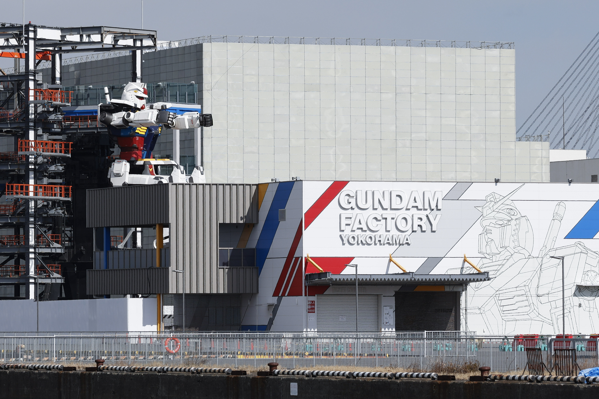
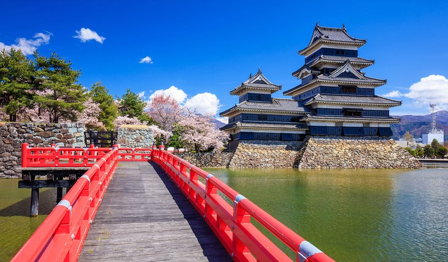

Country of Japan

Japan Gundam Factory
Since the opening of the port, Yokohama has been a window for exchanges between Japan and overseas, and with its historic buildings and beautiful scenery, has developed a fascinating cityscape and rich culture. Yamashita Pier in Yokohama, the international port city, will see a fusion between Gundam, a character that also attracts a lot of attention from overseas, and Japanese manufacturing with its excellent technological capabilities.
It's the Mobile Suit Gundam that appeared in the eponymous animation "Mobile Suit Gundam". It has been said that the machine of Gundam was lost after surviving the battle between Earth people and spacenoids.
However, a huge quantity of parts that seem to be from the Gundam type mobile suits have been discovered in the vicinity of Yamashita Pier in Yokohama. Engineers from various fields have gathered at "GUNDAM FACTORY YOKOHAMA" for research, analysis, and reconstruction to elucidate these parts. It was as if a new Gundam was being developed. Finally, the frame is completed and the startup experiment begins!
The magnificent world view held in the story of "Gundam" spurs, inspires, and moves the imagination and passion of many people involved in the project. Dreams become reality, and that reality creates new dreams... Please have the live experience of various motions by Gundam, including poses reminiscent of famous scenes!

Historic Kyoto
One of Japan's most visited cities, lovely Kyoto – one of the few cities in the country to be spared the devastation of WWII – attracts more than 10 million visitors annually. Most of them are here to explore Kyoto's fine old streets and architecture, much of it unchanged since the Imperial family took up residence here more than 1,000 years ago.
Even then, the city was Japan's most important cultural center. This legacy , in fact, continues to this day with its many museums and art galleries, each bursting with important sculptures, paintings, and other art forms.
Highlights of Kyoto's Buddhist-influenced architecture include its many well-preserved temples, 30 of which are still in use, and important structures such as the 14th-century Golden Pavilion (Kinkaku-ji), famous for its exquisite gold-leaf-clad exterior.
Be sure to also visit Nijo Castle, a 17th-century fortress that has retained its original walls, towers, and moat. Also worth seeing are the castle's beautiful gates, along with its palace with fine interior décor. Another landmark to visit is the original Kyoto Imperial Palace (Kyoto-gosho). Built in AD 794, it's one of the city's most visited historic sites.
Finally, no visit to Kyoto is complete without spending time exploring the Arashiyama Bamboo Grove. This beautiful area of tall bamboo is just a few minutes' walk from the town center.

Matsumoto Castle, Nagano
Japan has hundreds of beautiful, historic castles. But none is as complete or mesmerizing as Matsumoto Castle. Built from 1592 to 1614, Matsumoto is located in the city of Nagano. Tip: One of the best times to visit the castle is in the spring, when the grounds of the castle are powdered a soft pink with the bloom of thousands of cherry blossoms.
Inside the castle, visitors have one of the best glimpses back into time. Matsumoto Castle has maintained its wooden interiors, giving a true historic feel to the experience. Matsumoto is considered to be one of five castles that are designated as "National Treasures of Japan." It is the oldest six-story castle tower that remains in the country.